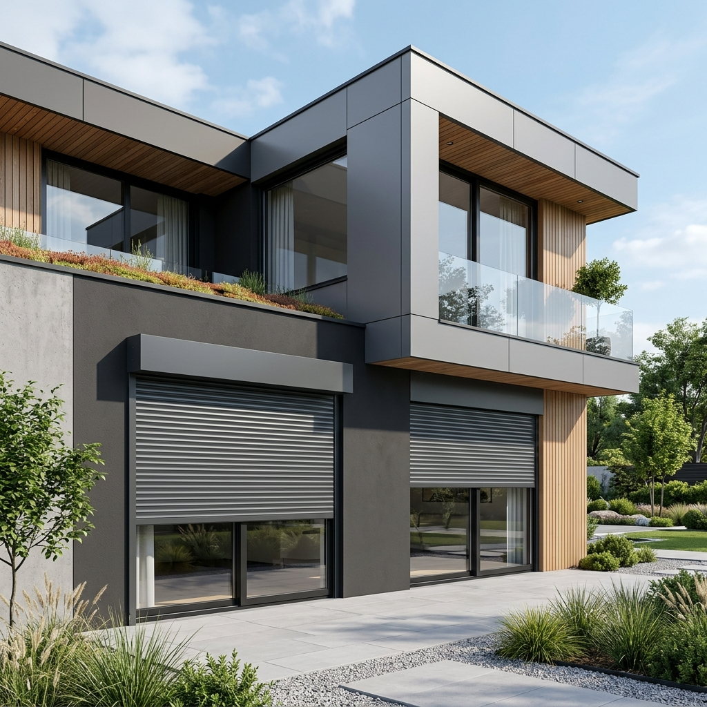

Fényvédelem és Komfort
A redőnyök nem csupán az árnyékolásról szólnak. Modern megoldásaink jelentősen javítják otthona hőszigetelését, védik a nyílászárókat az időjárás viszontagságaitól, és növelik a biztonságot. Választható alumínium vagy műanyag kivitelben, akár beépített szúnyoghálóval is.
Energetikai előnyök
Egy megfelelően megválasztott redőny télen akár 15-20%-kal csökkentheti a hőveszteséget az ablakfelületen, nyáron pedig megakadályozza a belső terek túlzott felmelegedését, így csökkentve a klímahasználat költségeit.
Fényzárás
A teljes sötétségtől a finoman szűrt fényig minden igényt kielégít.
Zajszűrés
Csökkenti a külső környezeti zajokat, nyugodtabb pihenést biztosítva.
Védelem
Védi a nyílászárókat az UV-sugárzástól, jégveréstől és a széltől.
Kombinálhatóság
A "combi" típusok beépített, rolós szúnyoghálóval rendelkeznek.
Külső tokos alumínium redőnyök
A prémium választás: kiváló stabilitás, hosszú élettartam és extra hőszigetelés a habbal töltött alumínium lamelláknak köszönhetően.

- Aluroll: Népszerű külső tokos alumínium redőny. Időtálló és elegáns megoldás.
- Aluroll combi: Az Aluroll praktikus, integrált rolós szúnyoghálóval szerelt változata.
- Aluhid: Vakolható külső tokos alumínium redőny. Új építéseknél a tok elrejthető a homlokzatban.
- Aluhid combi: A vakolható kivitel és a szúnyogháló kombinációja a maximális kényelemért.
Külső tokos műanyag redőnyök
A gazdaságos és hatékony megoldás: könnyű szerkezet, kiváló ár-érték arány és jó alap hőszigetelés.

- Polyroll: Népszerű külső tokos műanyag redőny. Egyszerű és megbízható.
- Polyroll combi: A Polyroll változata, amely beépített szúnyoghálóval védi otthonát a rovaroktól.
- Polyhid: Vakolható külső tokos műanyag redőny, esztétikus, rejtett tokos megoldás.
- Polyhid combi: A Polyhid rolós szúnyoghálóval épített változata a legmagasabb funkcionális igényekhez.
Kérje szakértőnk segítségét!
Nem tudja, melyik típus lenne a legmegfelelőbb? Ingyenes felmérésünk során segítünk a döntésben!
Ajánlatkérés Küldése